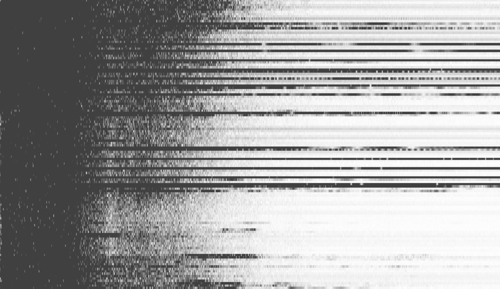
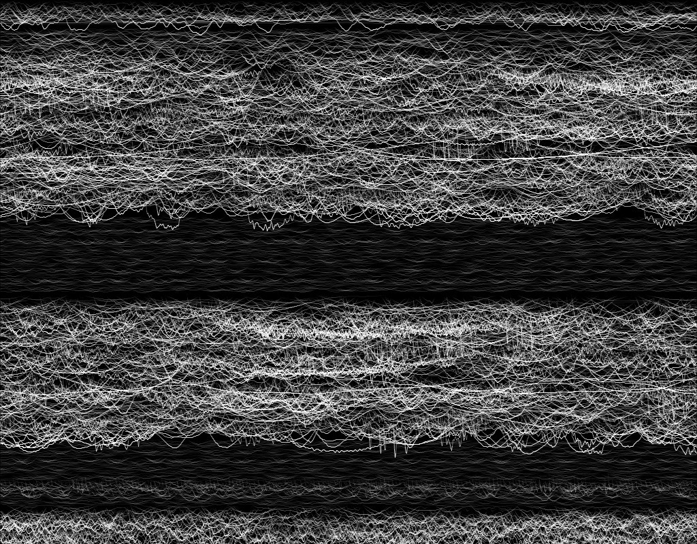
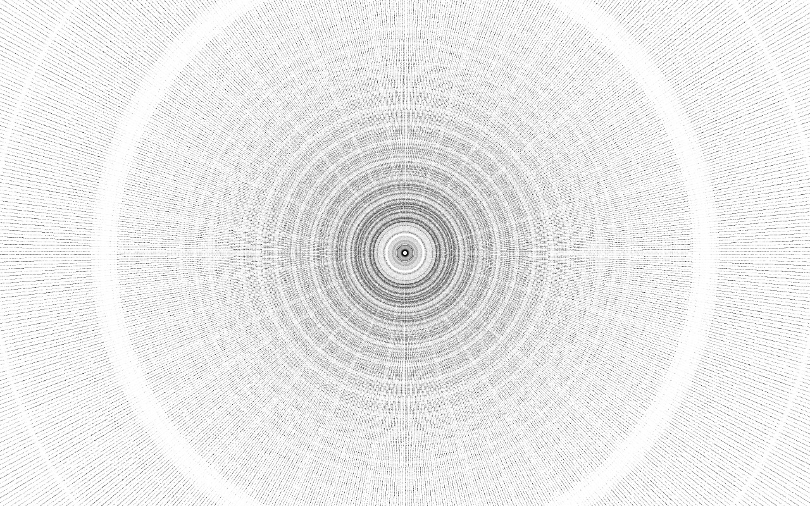

Data of a Third Kind
Over the last few years, I’ve been trying to play with data, and extrapolate meaning from datasets. It’s all very functional, and the more complex the dataset, the more fun it’s been to find correlations and overlaps. It does get dull at times, and very frustrating when nothing seems to work out. There are many tools with which data can be handled with, be it the ever functional spreadsheet, the notepad file, or even the back of a tissue paper. My weapon of choice is an IDE called Processing. An IDE, or Integrated Development Environment is a platform that allows for the compilation of code, amongst other functions. Created by Ben Fry and Casey Raes, Processing uses an abstracted version of Java, which makes coding a lot more accessible to visual artists who have no prior experience with programming. What makes Processing different from other tools for working with data is that it can not only work with a lot more data, but also different kinds of data.
Sound is a very strange medium. I’ve always thought of sound as a very powerful tool, which can affect my emotional experiences deeply. We hear sound when our eardrums “feel” the vibrations of the air around us, and perceive that to be sound. A combination of sounds forms a musical composition. Many tend to hear music, or feel it. But I’ve started to see music in a different perspective. To show you what I mean, this is what music looks to me nowadays:

The numbers are a result of an FFT analysis of the sound. FFT, also known as Fast Fourier transform, breaks down the sound into its individual frequencies, which is what you see above. These numbers are the components of the music you hear, defining each vibration that enters your ear. The thought of music, which is so powerful and often indescribable, being broken down into numbers is so exciting and fascinating. Quantifying something which can’t be easily described.
Now that we have these values, what do we do with them? Using Processing, I started experimenting with printing music, and making sound visible. These values are the bridge between hearing something and visualising it. The frequencies described in this dataset are exactly what you hear, so it stands to reason that these values might also be equally useful when trying to “see” sounds.
So I started printing these values out, in simple shapes and forms to see what sounds looks like.



It is fascinating no doubt, but it seemed to lack something important. These visuals were too static. Sound is an active phenomenon, always changing, full of energy and life. To inject that spark of life into the visualisations, I switched tack and started work on visualising sound, rather than printing static images.
I could finally see progress now. There’s still a lot of work to be done, but this was a step in the right direction. The energy of the sound I was hearing was finally starting to make itself seen. The visuals looked like they had life in them.
In every experiment, most of my efforts went into massaging the values, working with mathematical functions and logic gates to induce small amounts of intelligence into the code to allow sound to control the visuals. I didn’t want to get in the way of the sound producing visuals. I simply gave it some rules and restrictions to follow, and let the sound dictate everything else. It is amazing to see how mathematics and logic play such a big role in understanding and creating sound and visuals, the mainstays of traditional art.
To push myself, I took up the 36 Days of Type challenge to see how I could creatively visualise the data derived from sound everyday. The goal was to use the data differently for every letter, and start using increasing levels of intelligence, by giving the sound more autonomy in creating visuals.
I’ve just started to scratch the surface on the possibilities here, and I still have to start analysing sound a lot more deeply to understand the smaller nuances. But the process of doing is truly very enjoyable, and it is fascinating to see how minor changes in frequency can dramatically alter the impact of sounds.
By affecting the manner in which the values change, the visuals can be dramatically altered. The more intricately the values are calculated and managed, the more detailed the visuals can get. It’s a bit like mathematical surgery, fine-tuning the values and mathematical functions to get the desired results.
Whoever said mathematics wasn’t fun?